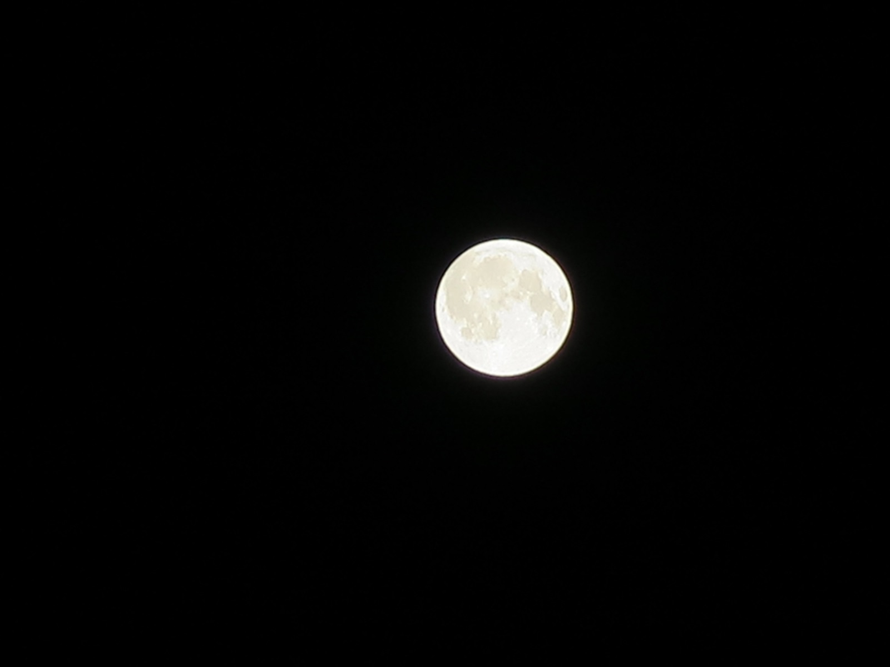
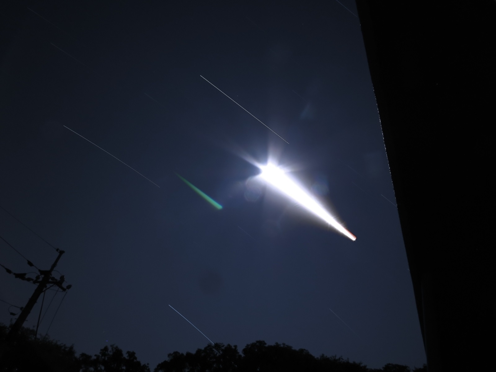
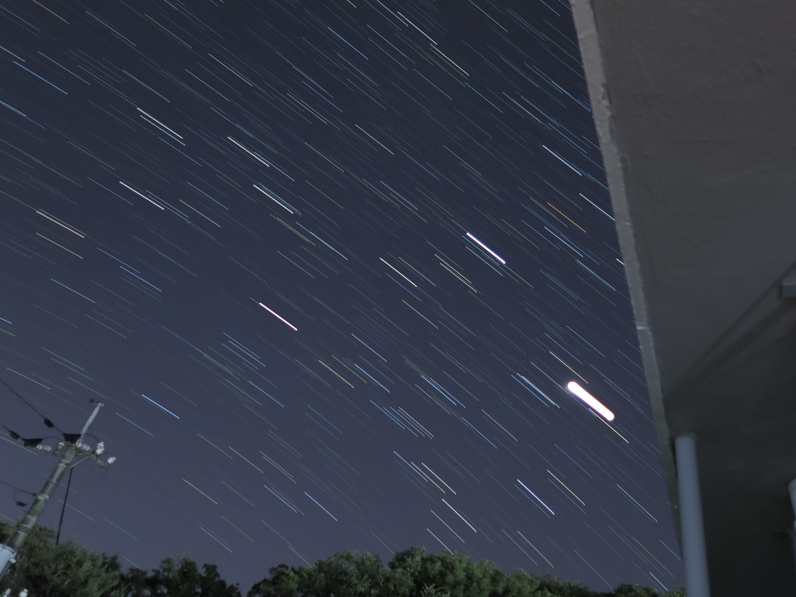
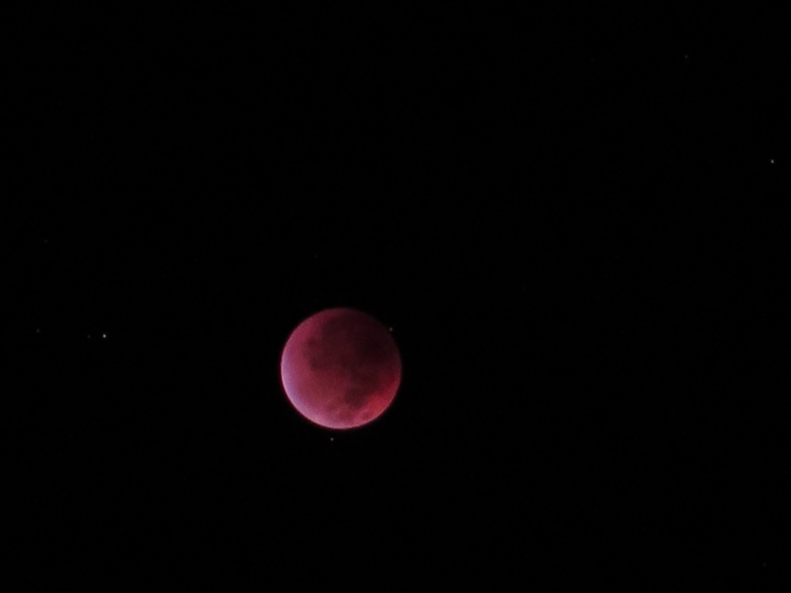
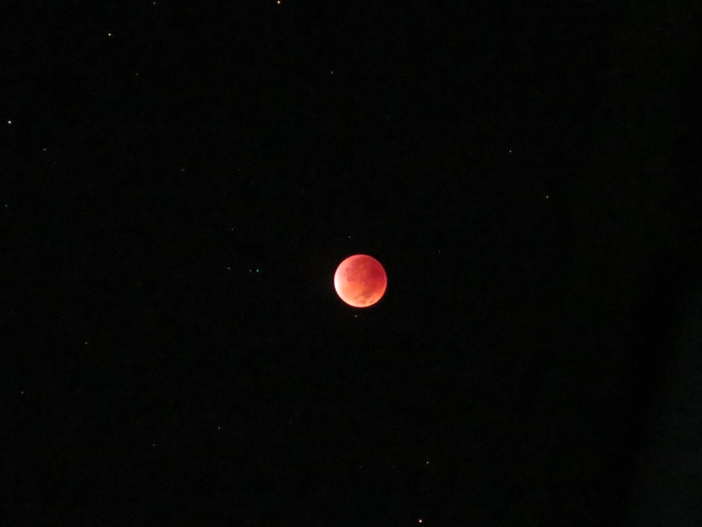

0005 2025/09/08 満月からの皆既月食へ

皆さんは皆既月食をご覧になられましたか？
私は皆既月食が見える場所を自転車で移動して探す予定でしたが、
幸運にもベランダから撮影することができました！。
月食前のお月様はこちら↓

満月から皆既月食手前までの軌跡を撮影したのがこちら↓

途中で撮影時間切れにより再度撮影し直したのがこちら↓

月食により光量が少なくなったことで、月食前には見られなかったさまざまな星が軌跡として見えるようになりました。
皆既月食前の写真はこちら↓

異なる撮影モードで撮影したものがこちら↓

満月中は月光浴したり、Youtubeでは行われた皆既月食のライブを部屋で見ながら、
時折ベランダに出てカメラの様子を見たり、という感じで過ごしました。
こういう時間の過ごし方は2020年4月にここしまなみへ移住して以来、初めて。
月が食われてまた新たに、という流れは、私の状況も一緒（笑）。
今後もこういう時間の過ごし方ができるような生活を創造していきたいですね。
サムネイルの写真のように、皆既月食は光量が少なくて撮れませんでしたが、コンパクトデジタルカメラを駆使してここまで撮れたのは運が良かったです。
ー*－ー*－ー*－ー*－ー*－
そうそう、ここ最近の興味は、しまなみ映画祭 2025のイベントです。2025/9/13(土) 〜 2025/9/23(火)が行われますが、天気予報によって行き先を検討してみようかな？